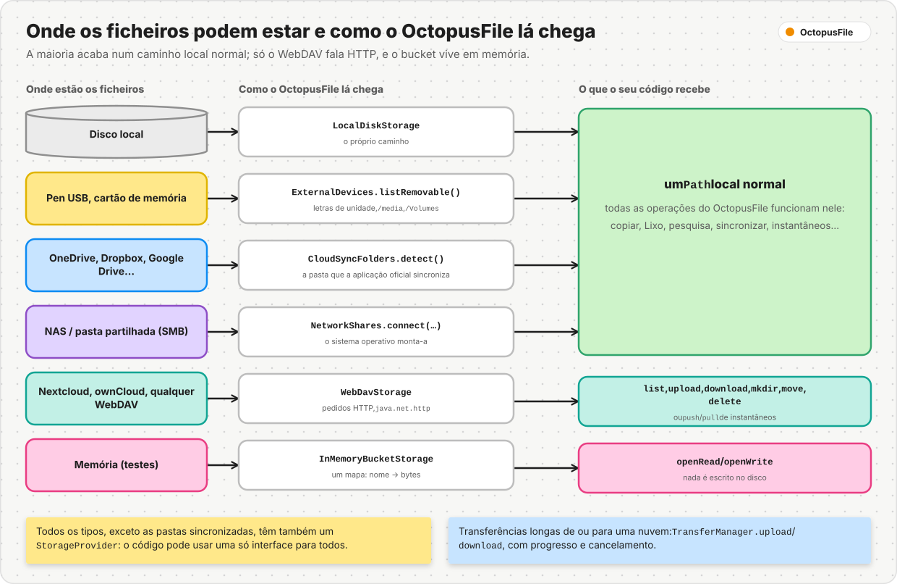
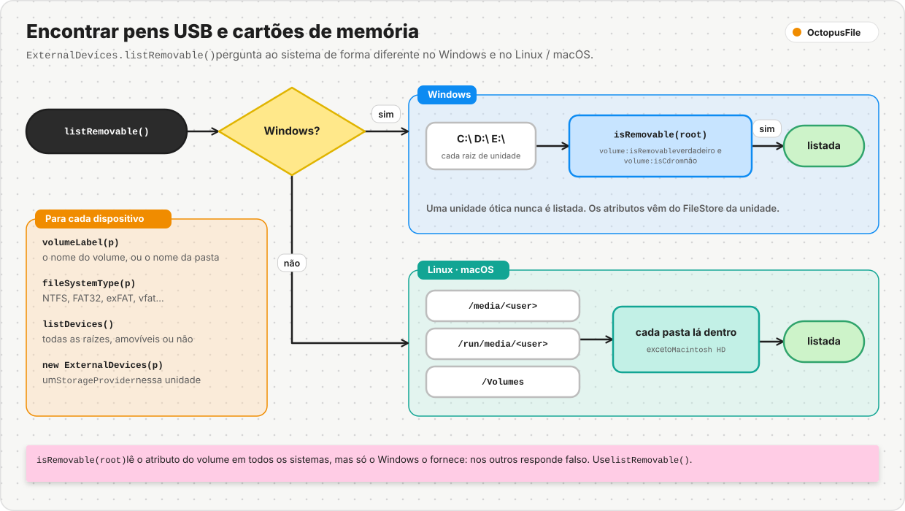
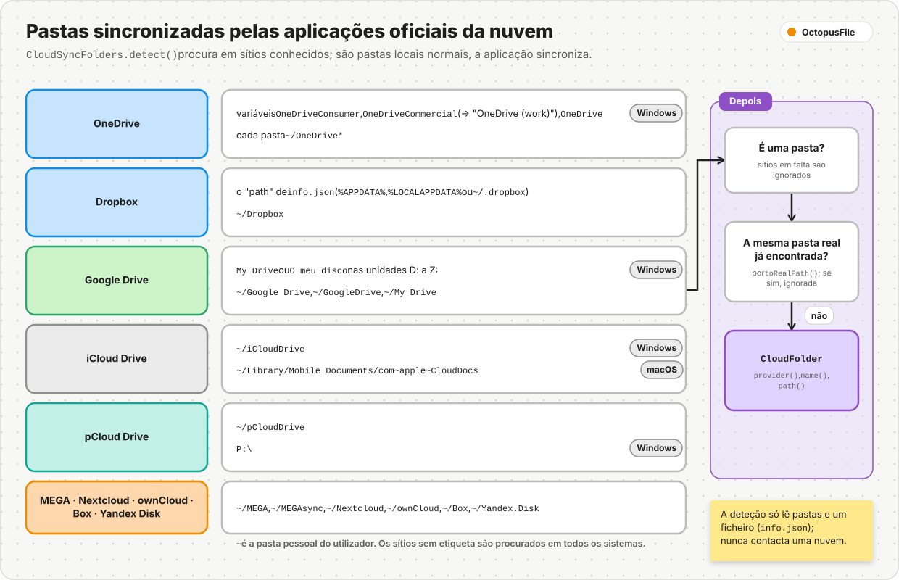
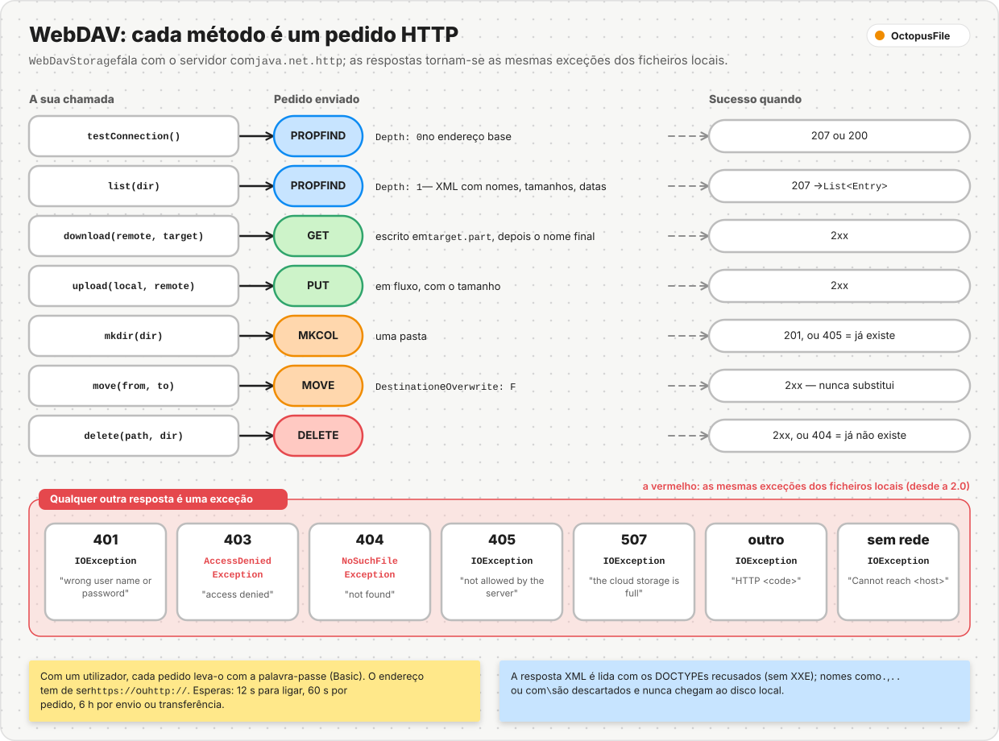
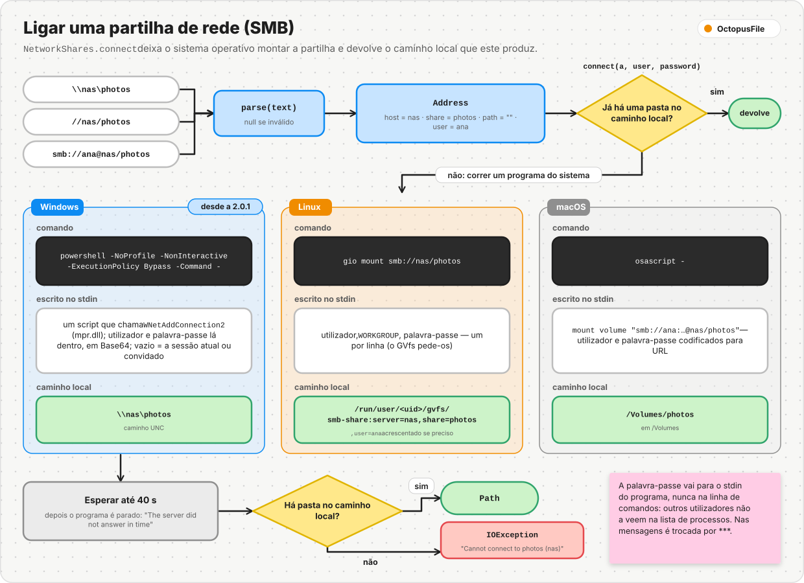
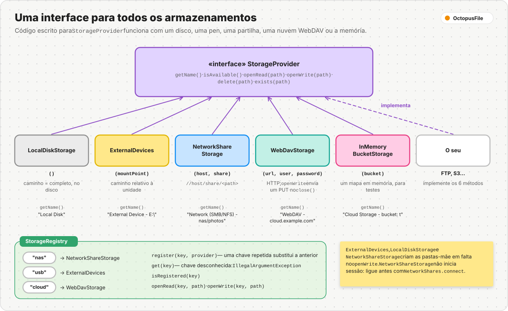

Armazenamento: dispositivos, nuvens e partilhas de rede

Dispositivos externos#

javafor (Path p : ExternalDevices.listRemovable()) { // pen drives, memory cards, USB disks
System.out.println(ExternalDevices.volumeLabel(p) + " (" + ExternalDevices.fileSystemType(p) + ")");
}
isRemovable(root) verifica uma unidade com o atributo volume:isRemovable do seu armazenamento de ficheiros (as unidades de CD/DVD ficam de fora): fiável no Windows. No Linux e no macOS use listRemovable(), que procura as montagens em /media/<utilizador>, /run/media/<utilizador> e /Volumes (exceto Macintosh HD).
Pastas sincronizadas na nuvem#

javafor (CloudSyncFolders.CloudFolder c : CloudSyncFolders.detect()) {
System.out.println(c.name() + " -> " + c.path());
}
Encontra as pastas mantidas em sincronização pelas aplicações oficiais: OneDrive, Dropbox, Google Drive, iCloud, MEGA, Nextcloud, ownCloud, pCloud, Box e Yandex Disk. São pastas locais normais.
Nuvens WebDAV#

Nextcloud, ownCloud, Box, pCloud, Yandex Disk, Koofr, servidores NAS e qualquer servidor WebDAV, com java.net.http.
javaWebDavStorage dav = new WebDavStorage("https://cloud.example.com/remote.php/dav/files/ana/", "ana", "app-password".toCharArray());
dav.testConnection();
for (WebDavStorage.Entry e : dav.list("/Documents")) {
System.out.println(e.name() + (e.directory() ? "/" : ""));
}
dav.upload(Path.of("report.pdf"), "/Documents/report.pdf", bytes -> { }, () -> false);
Também mkdir, delete, move, download. Os erros são claros (wrong user name or password, not found, the cloud storage is full). O analisador de XML recusa DOCTYPEs (sem XXE) e nomes como .. vindos do servidor são ignorados. Para guardar a palavra-passe em repouso, consulte CredentialVault. Para progresso e cancelamento, use TransferManager.upload/download (transferências).
Partilhas de rede (SMB)#

javaNetworkShares.Address a = NetworkShares.parse("\\\\nas\\photos"); // also //nas/photos, smb://ana@nas/photos
Path local = NetworkShares.connect(a, "ana", "secret".toCharArray());
É o sistema operativo que estabelece a ligação e o OctopusFile usa o caminho local que este produz: um caminho UNC no Windows (ligado com a API do Windows; sem utilizador, usa a sessão atual), gio mount (GVfs) no Linux, mount volume no macOS. A palavra-passe nunca vai numa linha de comandos. connect bloqueia até cerca de 40 s; chame-o fora da thread da interface. isAvailable(address) verifica sem ligar.
Uma interface para todos — StorageProvider#

LocalDiskStorage, ExternalDevices, NetworkShareStorage, WebDavStorage e InMemoryBucketStorage (para testes) implementam StorageProvider: getName(), isAvailable(), openRead(path), openWrite(path), delete(path), exists(path). StorageRegistry guarda os fornecedores por chave, pelo que é possível ligar os seus próprios (FTP, S3, …):
javaStorageRegistry registry = new StorageRegistry();
registry.register("nas", new NetworkShareStorage("nas", "photos"));
try (InputStream in = registry.openRead("nas", "2026/beach.jpg")) { ... }
Exemplos compilados e executados pelo DocExamplesTest